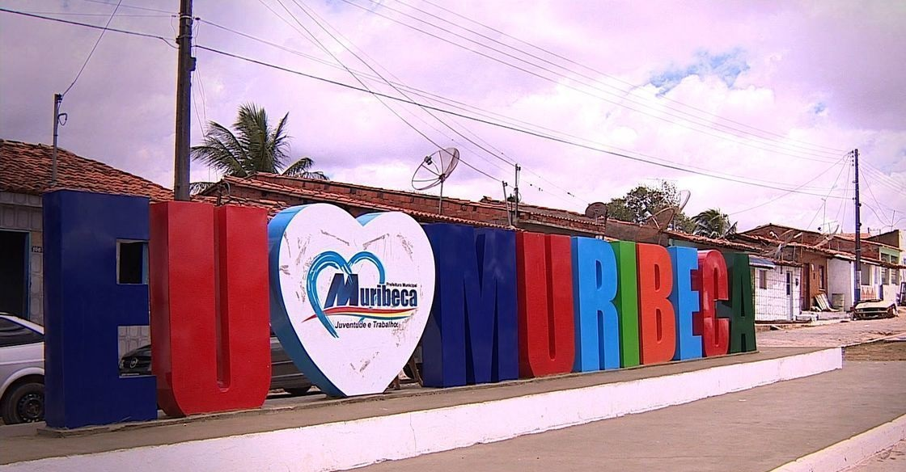

Muribeca
História
Nascido com o nome de Sítio do Meio, o município de Muribeca, localizado a 72 quilômetros da capital Aracaju, fazia parte da área que Cristóvão de Barros, conquistador de Sergipe, deu em 1590 a seu filho, Antônio Cardoso de Barros, através de sesmaria. Elas foram compradas por João Batista de Almeida Figueiredo, onde ele construiu o primeiro prédio do lugar - uma pequena capela. Tempos depois ela deu lugar à Igreja Matriz da cidade, sendo escolhido como padroeiro Nosso Senhor da Misericórdia, louvado todo dia 1º de janeiro. Mas foram os filhos de João Batista de Almeida, Manoel Almeida Figueiredo e Francisco Xavier de Figueiredo, que tiveram participação mais destacada na povoação de Sítio do Meio, localidade pertencente na época a Propriá.
Em 1897, Sítio do Meio já era um próspero povoado, mas sua evolução político-administrativa só teve início em 7 de novembro de 1921, quando foi criado o distrito de paz ainda com a mesma denominação. Nesse período, a povoação não pertencia mais a Propriá e sim a Aquidabã, que foi desmembrado em 1882 do município propriaense. O termo judiciário de Muribeca foi criado em 1926, através da lei nº 942, de 8 de outubro, que deveria ter como sede o Povoado Sítio do Meio. Nesse mesmo tempo ele foi também elevado à categoria de vila e passou a pertencer juridicamente a Capela.
Só em 1938 a Vila de Muribeca foi elevada à categoria de cidade, através do decreto-lei nº 69, de 28 de março. O município ficou constituído pelos povoados Várzea da Onça, Visgueiro, Saco das Varas, Pedras, Camará, Pau Alto, Arrodeador, Cajueiro e Cabeça da Onça. Teve como primeiro prefeito o pároco da cidade, Carlos Camélio Costa, que foi homenageado anos depois com seu nome sendo colocado no fórum da cidade.
fonte: https://muribeca.se.gov.br/hist%C3%B3ria-do-munic%C3%ADpio-de-muribecaPontos Turísticos
Igreja Matriz Senhor das Misericórdias
A Igreja Matriz Senhor das Misericórdias criada em 1921, é constituída pelos povoados: Varzea da Onça, Arrepio, Visgueiro, Saco das Varas, Pedras, Camará, Arrodiador, Pau Alto, Inês, Cajueiro, Cigana e Cabeça da Onça. O Bispo é Dom José Tomás Gomes da Silva e no dia 1 de janeiro é comemorada a festa do padroeiro: o Senhor das Misericórdias.
Dados Gerais de acordo com o IBGE
| Prefeito (a) | Mario Cesar da Silva Conserva |
| Vice-Prefeito (a) | Raphael Figueiredo De Morais |
| Site do município | https://muribeca.se.gov.br/ |
| Área territorial | 74,310 km² |
| População estimada | 7.653 pessoas |
| Densidade demográfica | 96,81 hab/km² |
| IDHM | 0,626 |
| PIB per capita | R$ 12.257,63 |